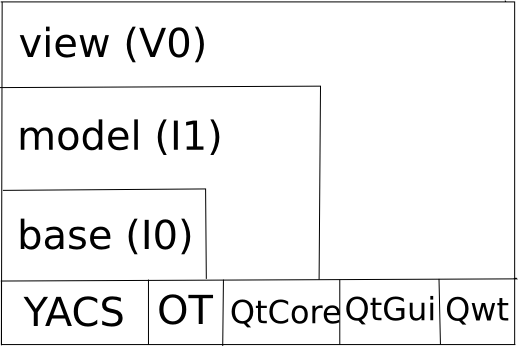

Architecture considerations¶
Dependencies¶
Several dependencies are needed in order to build the GUI:
OpenTURNS >= 1.9
Qt >= 4
Qwt >= 6
Python >= 2.7, < 3
Boost.regex
Boost.filesystem
SalomeYACS (optional, for YACS support
Sphinx-doc (optional for this doc)
Compilation¶
cd persalys
mkdir -p build && cd build
cmake \
-DCMAKE_INSTALL_PREFIX=$PWD/install \
-DOpenTURNS_DIR=$PWD/../../openturns/build/install/lib/cmake/openturns \
-DSalomeKERNEL_DIR=$ROOT_SALOME_MECA/V2015_1/modules/KERNEL_V7_5_1/salome_adm/cmake_files/ \
-DSalomeGUI_DIR=$ROOT_SALOME_MECA/V2015_1/modules/GUI_V7_5_1/adm_local/cmake_files \
-DSalomeYACS_DIR=$ROOT_SALOME_MECA/V2015_1/modules/YACS_V7_5_1/adm/cmake/ ..
Source code structure¶
The GUI classes are organized by 3 layers: I0, I1, V0. This layered organization is reflected in the sources with three different folders and their associated sub-libraries.
Here is the global class diagram for each layer: